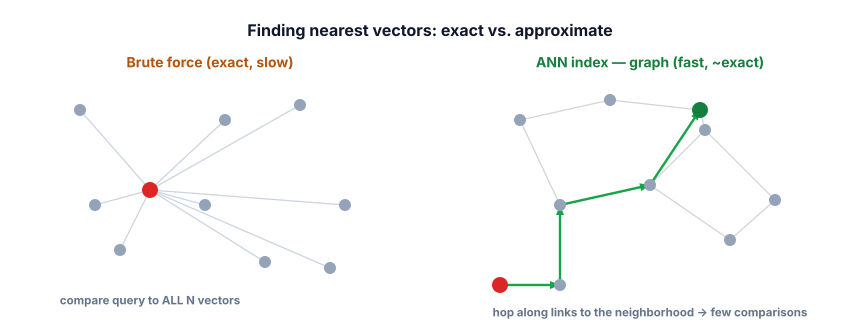

Vector databases & indexes
Brute-force cosine over a NumPy array is perfect — until you have a million chunks and need answers in 20 milliseconds. Vector databases make retrieval fast, filterable, and durable. Here’s what they actually do, and the one trade-off you must understand.
Why a special database
Computing cosine against every stored vector is O(N) — fine for thousands, hopeless for millions (every query would compare against all of them). A vector database solves this with three things a NumPy array can’t give you: a clever index that finds nearest neighbors without checking every vector, metadata filtering (only search documents this user is allowed to see, from this date range), and the boring-but-vital persistence, updates, and deletes you need in production.
A vector database stores records of (id, vector, metadata, text) and supports fast nearest-neighbor search over the vectors. Because exact nearest-neighbor is slow at scale, vector DBs use approximate nearest neighbor (ANN) indexes — data structures that find almost the closest vectors while checking only a small fraction of them. The trade you control: a little accuracy (recall) for a lot of speed.

What’s stored, and why metadata matters
| Field | Example | Used for |
|---|---|---|
id | "manual#chunk_12" | Identity, updates, deletes, citations |
vector | [0.02, -0.41, …] | Similarity search |
metadata | {source, date, user_id, section} | Filtering — permissions, recency, scoping |
text | the chunk itself | Putting into the prompt + citing |
Metadata filtering is not a nice-to-have. It’s how you enforce that user A never retrieves user B’s documents, how you prefer recent data, and how you scope a search to one product. A vector match that ignores permissions is a security incident waiting to happen.
The index family (intuition)
You’ll meet a few index types; you don’t need the math, just the shape:
- Flat / brute force — check everything. Exact, simple, fine up to ~tens of thousands of vectors.
- HNSW (the popular default) — builds a multi-layer graph of links between vectors; search “navigates” the graph toward the query. Fast and accurate; tune the
efparameter to trade recall for speed. - IVF — clusters vectors into buckets; search only the few nearest buckets (
nprobeof them). Memory-efficient for huge corpora.
Chroma is a free, open-source vector DB that runs locally and even embeds text for you. Note the metadata and the filtered query.
!pip install chromadb
import chromadb
client = chromadb.Client()
col = client.create_collection("docs") # uses a free built-in embedder
col.add(
ids=["c0", "c1", "c2"],
documents=[
"Returns are free within 30 days.",
"The X200 has a 3-year warranty.",
"Cancel your plan under Settings > Billing.",
],
metadatas=[
{"source": "returns", "product": "X200"},
{"source": "warranty", "product": "X200"},
{"source": "billing", "product": "account"},
],
)
res = col.query(
query_texts=["how long is the guarantee?"],
n_results=2,
where={"product": "X200"}, # metadata filter — only X200 docs
)
print(res["documents"][0]) # -> ["The X200 has a 3-year warranty.", ...]The filter means even if an account-billing chunk were similar, it could never be returned for an X200 query — that’s your permission/scoping boundary, enforced at search time. Swap Chroma for FAISS, Qdrant, Weaviate, or Postgres’s pgvector later; the concepts are identical.
Exact or approximate?
Drag the corpus size. This one curve explains why small projects need no vector database at all, and why large ones cannot live without an index.
- Vector DBs add fast ANN search, metadata filtering, and persistence over raw cosine.
- ANN trades a little recall for a lot of speed — the central knob of vector search.
- Records are (id, vector, metadata, text); metadata filtering enforces permissions, recency, and scope.
- HNSW (graph) is the common default; IVF (clusters) suits huge corpora; flat is exact for small data.
- Free options: Chroma, FAISS, Qdrant, Weaviate, pgvector — same ideas, different packaging.
A multi-tenant SaaS uses one vector index for all customers. A query from Customer A returns a chunk from Customer B’s private docs. What was missing?
1. You have 5,000 chunks and a hackathon deadline. Do you need a vector DB, or is NumPy fine? Justify.
2. Your ANN search is fast but occasionally misses an obviously relevant chunk that exact search finds. What knob do you turn, and what’s the cost?
3. Design the metadata you’d attach to chunks for a customer-support RAG serving multiple products and user tiers.
▸ Show solutions & reasoning
1. NumPy is fine. At 5,000 chunks, brute-force cosine is a single small matrix multiply — sub-millisecond — and you skip all the setup. Reach for a vector DB when you outgrow memory/latency (hundreds of thousands+), need filtering and persistence, or want concurrent updates. Don’t add infrastructure you don’t need.
2. Increase the ANN search effort — e.g., HNSW’s ef (or IVF’s nprobe): the index explores more candidates, raising recall toward exact. The cost is higher latency and compute per query. It’s a dial: tune it against a recall target you measure (Lesson 3.8), not by feel.
3. Per chunk: source (doc id/url for citation), product (to scope), section/title (for display and parent-doc retrieval), tier or visibility (to enforce who can see it), updated_at (to prefer/expire recent info), and chunk_id. With these you can filter by product and tier, cite the source, and keep answers current — the metadata is half the system.
Every ANN index exposes a knob that slides between “fast and approximate” and “slow and exact.” For HNSW it’s ef (how many candidates to explore during search) and M (graph connectivity at build time); for IVF it’s nprobe (how many clusters to scan). Turning them up raises recall and latency together. The professional move is to fix a target — say, “recall@10 ≥ 0.95 at p95 latency < 30 ms” — and tune to hit it on your data, rather than accepting defaults blindly. Defaults are a guess about someone else’s corpus.
Filtering has a subtle trap worth knowing. Combining a metadata filter with ANN search isn’t free: if the filter is very selective (say, 0.1% of vectors match), a naive “search then filter” can return mostly filtered-out neighbors, tanking recall, while “filter then search” can be slow.
Good vector DBs implement filtered ANN to handle this, but you should test retrieval quality with your real filters applied, not just on the open index. And for strict isolation (regulated data, hard multi-tenancy), consider separate collections/indexes per tenant rather than relying on a filter — defense in depth beats a single where clause.
As always: the data and access model around the vectors is where production RAG is won or lost.
Even a great index returns an approximate, similarity-only ranking. To squeeze out real precision, you add a second pass that reads each candidate carefully. Next: retrieval & reranking.